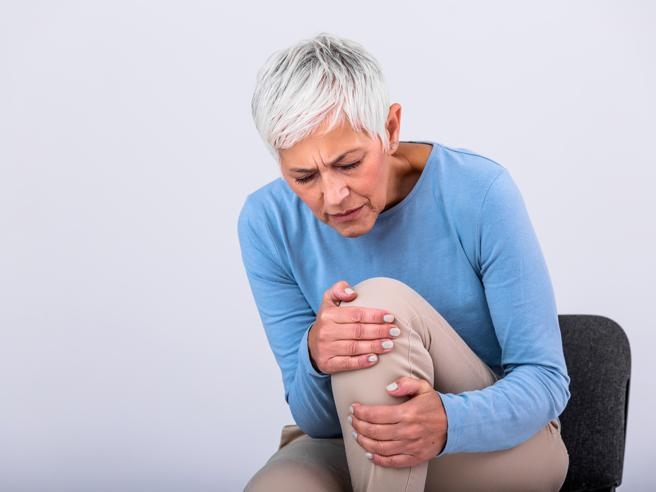

<!-- SEZIONE OSTEOPATIA -->
<section id="osteopatia" class="bg-light-2 py-3">
    <div class="container">
        <div class="background-image-light" [ngClass]="{'show': isBackgroundVisible}"></div>
        <div class="text-container">
            <h1 class="titolo my-2" [ngClass]="{'show': isH1OsteoVisible}">L'osteopatia</h1>
            <p class="text-5" [ngClass]="{'show': isContent1Visible}">
                L'osteopatia è una terapia manuale <em>complementare</em> alla medicina convenzionale. Si basa sul
                contatto
                manuale per la valutazione
                e il trattamento della persona, al fine di ricercare e trattare le aree disfunzionali.
            </p>
            <p class="text-6" [ngClass]="{'show': isContent1Visible}">Si avvale di un approccio causale e non sintomatico:
                si
                basa quindi sulla ricerca della causa del dolore
                agendo su di essa e non limitandosi a trattare solo l'area dolente.
            </p>
            <h1 class="titolo" [ngClass]="{'show': isH1OsteoVisible }">Quando rivolgersi all'osteopata?</h1>
            <div class="text-7" [ngClass]="{'show': isContent1Visible}">
                Dolori muscolari e articolari quali:
                <ul>
                    <li>Dolore cervicale</li>
                    <li>Dolore lombare</li>
                    <li>Dolore alle anche</li>
                    <li>Dolore alle ginocchia</li>
                    <li>Dolore alle ginocchia</li>
                    <li>Artrosi</li>
                </ul>
                <div class="d-flex justify-content-center">
                    <div class="row pt-2 pb-3">
                        <div class="col-0 col-md-3"></div>
                        
                        
                        <div class="col-0 col-md-3"></div>
                        <div class="col-0 col-md-3"></div>
                        
                        
                        <div class="col-0 col-md-3"></div>
                    </div>
                </div>
            </div>
            <div class="text-8" [ngClass]="{'show': isContent1Visible}">
                <h3>Mal di testa</h3>
                <p>
                    L'osteopatia può aiutare in caso di cefalea o emicrania, riducendo la frequenza e l'intensità degli
                    attacchi.
                    Di conseguenza si otterrà una riduzione dell'assunzione di farmaci e un miglioramento della qualità
                    di vita
                    del paziente nella sua totalità.
                </p>
            </div>
            <h2 class="py-3" [ngClass]="{'show': isH2Visible}">
                Ma l'osteopatia è molto utile anche in caso di...
            </h2>
            <div class="text-9" [ngClass]="{'show': isContent2Visible}">
                <h3>Alterazioni posturali</h3>
                <p>
                    L'osteopatia aiuta a migliorare la mobilità articolare e l'elasticità muscolare, riducendo la
                    rigidità e favorendo il miglioramento della postura.
                </p>
                <div class="d-flex justify-content-center pt-2 pb-3">
                    
                </div>
            </div>
            <div class="text-10" [ngClass]="{'show': isContent2Visible}">
                <h3>Gravidanza e parto</h3>
                <p>
                    Durante la gravidanza l'osteopatia può aiutare a eliminare i dolori e i fastidi associati alla
                    gestazione. Inoltre, aiuta il corpo della donna
                    ad adattarsi al meglio alle modifiche che avvengono nel corso della gravidanza e favorisce la
                    preparazione delle strutture al momento del parto.
                </p>
                <div class="d-flex justify-content-center pt-2 pb-3">
                    
                </div>
            </div>
            <div class="text-11" [ngClass]="{'show': isContent2Visible}">
                <h3>Cicatrici</h3>
                <p>
                    Le cicatrici possono causare aderenze e limitare la mobilità e la funzionalità dei tessuti, causando
                    dolore e fastidi. Attraverso tecniche manuali
                    dirette e indirette, l'osteopatia può ridurre le tensioni del tessuto cicatriziale, favorendo
                    l'elasticità dei tessuti e riducendo le disfunzioni.
                </p>
                <div class="d-flex justify-content-center pt-2 pb-3">
                    
                </div>
            </div>
        </div>
    </div>
</section>